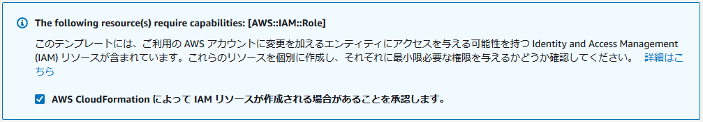

概要
このハンズオンでは、AWS で CI/CD を実践してみることを通して、
- CI/CD とは何か
- どう実現していくのか
を学んでいきます。
名前：荒井 泰貴
iOS アプリエンジニアです。
Continuous Integration / Continuous Delivery の略。
継続的インテグレーション / 継続的デリバリー。
ビルド、テスト、リリースを自動化することで、リリーススピードを上げ、ビジネス戦略を頻繁に反映し、ソフトウェアの競争力を向上させることを目的としています。
CI/CD サービスの例
- Jenkins
- Circle CI
- Travis CI
AWS では Code~ 系がそれにあたります。
どんな場合に CI/CD を実践するか
- ステージング/リリース環境など、複数の環境やアプリケーションが存在するとき
- 複数人のチームで開発をしているとき
- 特にローカルではなくリモートでチームを組んでいるとき
- 手動で動かして、確認して、... がメンドクサイと感じるとき
今回のハンズオン全体の概念図です。
ポイントは、
- ソースコードのコミット→ビルド→デプロイを自動化する CodePipeline
- 1 によりデプロイされる対象は Lambda Function
- 1, 2 全体を CloudFormation でさくっと構築
この章でやること
- Git 操作用の IAM ユーザーを作成します
- 作成したユーザーの git 認証情報を取得します
まずは AWS へログイン
AWS マネジメントコンソール へログインします。
リージョンは東京（ap-northeast-1）に設定します。

IAM ユーザーの作成
IAM コンソール へ移動します。
左メニューから「ユーザー」を選択します。
「ユーザーを追加」を選択し、以下の通りにユーザーを作成します。
ユーザー詳細の設定
- ユーザー名：任意
AWS アクセスの種類を選択
- アクセスの種類：AWS マネジメントコンソールへのアクセス
「次のステップ」を選択します。
アクセス許可の設定
IAM ユーザーにポリシーをアタッチします。
- 「既存のポリシーを直接アタッチ」を選択
- 「PowerUserAccess」にチェック（※検索窓を使うと簡単に見つけられます！）
「次のステップ」を選択します。
タグの追加 (オプション)
- タグは不要なので、そのまま「次のステップ」を選択します。
確認
- 内容を確認し、「ユーザーの作成」を選択します。
Git 認証情報の取得
IAM コンソール > ユーザーから、作成したユーザーを選択します。
「認証情報」タブを選択します。
「AWS CodeCommit の HTTPS Git 認証情報」の「認証情報を生成」を選択します。
「証明書のダウンロード」を選択します。ダウンロードした証明書（CSV ファイル）はあとで使います！

この章でやること
- CI/CD の各パーツを作っていきます
- ただし、一つ一つやっていると時間がかかるので、CloudFormation で一括作成します。
以下の URL から、CloudFormation のテンプレートを含んだ zip ファイルをダウンロードします。
ダウンロードした zip ファイルは展開しておきましょう。
中には以下の3つのファイルがあります。
- index.js
- template-lambda.yml
- template.yml
CloudFormation スタック作成
CloudFormation コンソール へ移動します。
「スタックの作成」をクリックします。
スタックの作成
「前提条件 - テンプレートの準備」の「テンプレートの準備完了」を選択します。
「テンプレートの指定」の「テンプレートファイルのアップロード」を選択します。
「ファイルの選択」から、先ほどダウンロードした「template.yml」を選択します。
「次へ」を選択します。
スタックの詳細を指定
以下の通り、スタックを作成します。
- スタックの名前：任意の名前
- ArtifactBucketName: 任意の名前（一意な名前になるように。※アンダーバーはつかえません！）
- BuildDockerImage: デフォルトのまま
- RepositoryName: 任意の名前に変更して OK
「次へ」を選択します。
スタックオプションの設定
設定不要です。
そのまま「次へ」
レビュー
画面の一番下にある IAM リソースの変更の承認にチェックを入れます。

「スタックの作成」を実行します。
ステータスが「CREATE_COMPLETE」になれば OK です。
CloudFormation スタックを確認
CloudFormation スタックにより CodePipeline が作成されていることを確認しましょう。
CodePipeline コンソール に移動します。
パイプラインが作成されていることを確認します。
ただし、パイプラインの実行は失敗しています。
（まだ CodeCommit が空であるため）
この章でやること
- 作成された CodeCommit のリポジトリをローカルにクローンして、CodeCommit にコードをコミットする準備をします。
CodeCommit リポジトリをクローン
事前に取得した git 認証情報を使って、先ほど CloudFormation で作成した CodeCommit リポジトリをクローンしましょう。
CodeCommit コンソール を開きます。
作成したリポジトリを選択し、詳細を開きます。
右上の「URL のクローン > HTTPS のクローン」を選択します。
（リポジトリの URL がコピーされます。）
ローカルの Git Bash などで以下のコマンドを実行します。
git clone リポジトリのURL
Username, Password の入力を求められるので、ダウンロードした git 認証情報に記載されている情報を入力します。
ローカルに空のフォルダが生成されれば成功です。
リポジトリが存在しないとエラーが出る場合は、Keychain に古い（他の）CodeCommit 認証情報が保存されていないか確認してください。（削除しても良い場合は削除するとうまくいきます）
この章でやること
- CodeCommit に Lambda のコードをプッシュします
→ Lambda がデプロイされます
- Lambda が実行できることを確認します。
CodeCommit に Lambda のコードをプッシュ
ダウンロードした zip 内のファイルから
- index.js
- template-lambda.yml
を CodeCommit をクローンしてできた空のフォルダに移動します。
Git でコミット、プッシュします。
git add . git commit -m "initial commit." git push -u origin HEAD
CodePipeline をみると、デプロイが実行されていくのが確認できます。
Lambda 実行確認
Lambda コンソール を開きます。
関数一覧から、作成した関数を選択します。
右上の「テストイベントの選択」から「テストイベントの設定」を選択します。
任意のイベント名を設定し、作成します。
右上の「テストイベントの選択」から作成したテストイベントを選択し、「テスト」を選択します。
実行結果が出力されます。

AWS の機能を使って CI/CD 環境を構築することができました！👏
最初は手間が多いですが、一度構築すれば、ビルド・デプロイの手間を減らすことができます。
AWS Code 兄弟は、他の AWS サービスとの親和性が高く、ポチポチ選ぶだけで設定できることも多いです。
アンケート
最後にアンケートがありますので、より良い勉強会作りのためにご協力お願いします！
不要なリソースが残っているとお金がかかるので、不要になったら削除しましょう。
作成された S3 バケットの中身を空にしておきます。
Lambda の CloudFormation スタックを削除します。
最初に作成した CloudFormation のスタックを削除します。
（順序を逆にすると、IAM ロールが先に削除され、デッドロックされます...）